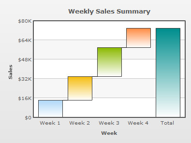

| Converting our previous chart into a Waterfall Chart |
|
In our previous example (Creating your first chart), we had created a Spline chart to graphically represent the weekly sales for one month. Here, we will quickly convert this chart into a waterfall chart without changing the original data. Code examples discussed in this section are present in Download Package > Code > MyFirstChart folder. Once completed, the chart would look like the image shown below: To change the chart type, all you have to do is change the name and path of the SWF file to the new chart SWF. Before working on this example, copy Waterfall2D.swf from the Download Pack > Charts folder to the Charts folder in the MyFirstChart folder. Let's see how the change is incorporated in the HTML code. For this example, create a copy of weekly-sales.html and save it as weekly-sales-waterfall.html in the same folder. And, finally edit the HTML code to reflect the following changes: <html>
<head>
<title>My First chart using PowerCharts XT - change chart type</title>
<script type="text/javascript" src="Charts/FusionCharts.js"></script>
</head>
<body>
<div id="chartContainer">PowerCharts XT will load here!</div>
<script type="text/javascript"><!--
var myChart = new FusionCharts( "Charts/Waterfall2D.swf",
"myChartId", "400", "300", "0");
myChart.setXMLUrl("Data.xml");
myChart.render("chartContainer");
// -->
</script>
</body>
</html>
See it live! In the above code, we have changed the path of the SWF file which was earlier pointing to Spline.swf but now points to Waterfall2D.swf. If you now open the HTML file in a browser, you will see a waterfall chart similar to this: Existing users: You might be wondering what happened to functions like setDataURL() which you have already been using in your application. Yes - although deprecated, it will continue to work without any problem. Please note that you can change the chart type without having to change the data, only if the new chart type is compatible with the original data. In case of this example, we are converting a Spline chart into a Waterfall chart. Since, both charts are single series the original data is valid for both chart types. |